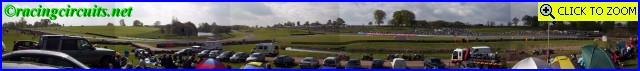
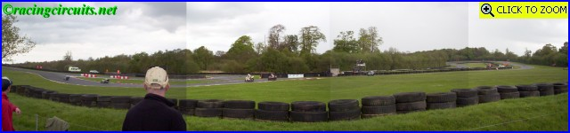
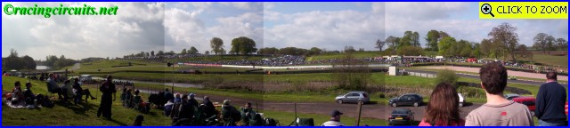
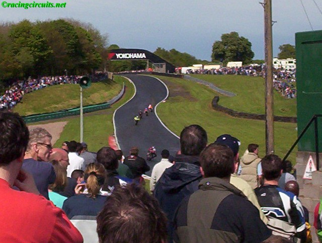
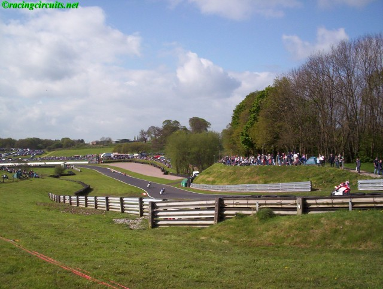

Numbers on the map represent the location where the photographs were taken. Click hyperlinks above to view the photographs.
|| Contents || Old Hall to Clay Hill | Clay Hill to Deer Leap || Home ||
Numbers on the map represent the location where the photographs were taken. Click
hyperlinks above to view the photographs.

1 - Looking back to the exit of Old Hall
corner.

2 - Cascades from southern side (outside) of
circuit.

3 - Panoramic from northern side (infield)
of circuit. From left to right:- The Avenue, Cascades, Lakeside, Hill Top, Hizzy's &
Knickerbrook. (517 kb - 4565x480)

4 - Foulston's Chicane to the left. In the
background to the right, Island bend sweeps left into the banked Shell Oils corner. (211 kb - 2088x480)

5 - Panoramic from infield of Lakeside
Straight, Hill Top, Hizzy's Chicane and Knickerbrook. The dirt road in the foreground
formed a part of the original circuit in 1953. (276 kb -
2184x480)

6 - From Knickerbrook up Clay Hill.

7 - Looking back to the exit of Knickerbrook
from the top of Clay Hill.
Return to racingcircuits.net's Photo Archive Main Index
©2005 Daniel King / racingcircuits.net. All rights reserved.
{kind=link}
{kind=link}
{kind=link}